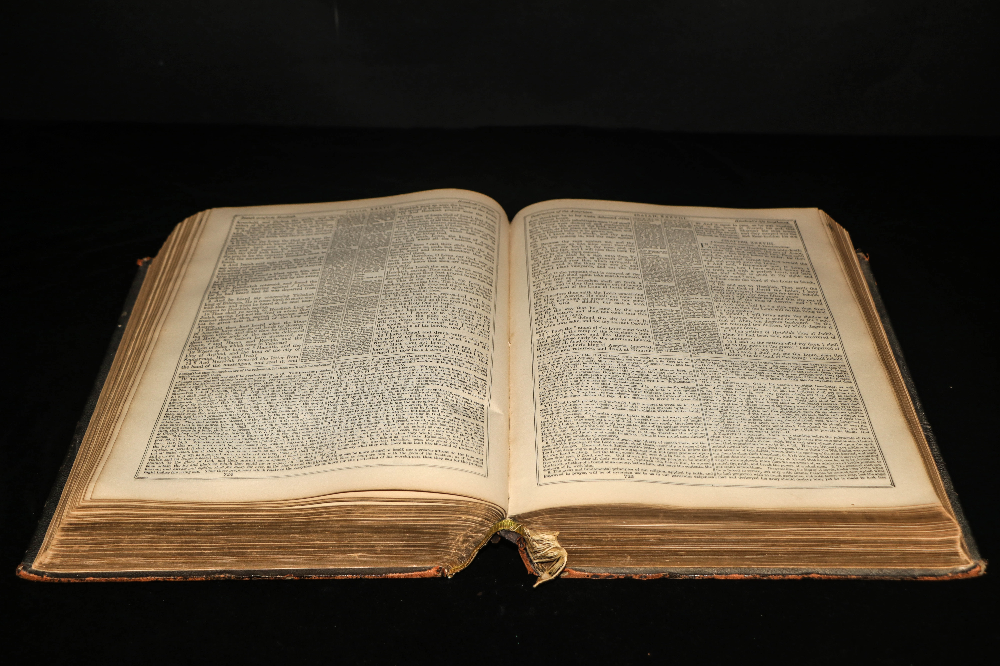

Setting
Isekai Covenant is set in a multiverse that contains a night infinite variation of individual worlds. The story begins in a world very similar to our own; a mundane modern Earth-life environment. Each nation within - though closely mirroring those of which we are familar - are called by different names, differed in how certain historic events played out, and even have differing international relationships. Our protagonist is a multinational child living as an international student after following his parents to their new workplace. As for the other worlds, there are many that resemble those seen in fantasy, science fiction, or a fusion of the two. Some worlds are even exclusively for beings on the level of deities...
The Multiverse
A Multiverse is a set of individual universes that all links together in a fundamental manner. For Isekai Covenant, the story takes place in a select few of the nigh infinite variations of worlds within. Each world can be described to have its own universe containing indigenous galaxies; which means a unique star chart for spacefarers. Travel between universes is usually only facilitated by the power of a deity for a certain purpose: to transfer a soul from one world to another in order to fulfill a goal. These dieties mostly pull people from relatively stable Source Worlds into a Fantasy World that they govern. There are also Pantheon Worlds that serve as homes or headquarters for several of these extemely powerful beings...

The Isekais
An Isekai is an individual contracted under a particular deity's service through a mutual agreement known as a Covenant. This refers to those currently visiting another world in fulfillment of that purpose and those who have returned to their homeworld afterwards. Each one is granted multiple benefits from their patron as part of the compensation; the nature this varies by the individual whims of the deity. Most of the common rewards include an augmented body, enhanced talent, supernatural abilities, bestowed artifacts, and even extended lifespans. As such, even the lowliest of them are extremely dangerous compared to the common man. Those who return from their duties tend to hide their power unless circumstances justify its use.
The Covenants
A Covenant is a set of terms and conditions mutually agreed upon between a particular deity and an individual Isekai. This precedes the process of transmigrating the soul to another world. The obligations imposed for either side, the specific benefits - permanent or temporary - for the Isekai, goals for the contractee to meet, and more are all customizable. In the end, the final form of a Covenant is a result of a mix of the deity's idieosyncracies and the Isekai's social finesse. This agreement is binding until the terms are met, after which the person is released from service and given the option to stay in the foreign world or return home. Most choose to return to their homeworld and go on to live very different lives. They either feign normalcy and refuse to stand out, make use of their accumulated talent and become a highly acclaimed personage, or even dominate a whole segment of society through their powers. A few choose to remain in the foreign world and live out the rest of their lives there. Perhaps they wish to settle there, found themselves as a person of power in that world, or even met a significant other to form a family with. In all cases, the person can be called again by the same deity - or even another - for a new adventure at any time; with consent, of course...

The History
Since the Ancient Era, a few people end up missing from their respective societies only to return somewhat changed. The time period of their disappearance varies from near-instant to centuries long. While most are simple cases, a small portion of them are actually Isekais who chose to come home. They then go on to become some of the greatest historical figures, such as a victorious general or successful monarch. Some historians would be perplexed at how some of these seem to possess insight or knowledge that was implausible to have for the time period. Perhaps only the persons themselves know the whole story behind their rise to greatness. Over time, more and more Isekais are taken away and returned to this planet. Inevitably, some would finally encounter and learn about each other. While some cases led to overt catastropic conflicts, most found it wise to keep things subtle and avoid causing mass panic among the regular citizens. Isekais with like minds or purpose gathered in to exclusive societies of varying sizes and become forces that run the world from the background...

The Present Day
Today, this world is populated by perhaps tens of thousands of Isekais or more. The subtle influence that sparked in early history now flourish unnoticed by the general public. They gather in groups a small as Clubs and act as a group. Others form Syndicates and dominate the underground or control a part of the local government. Still others gather in massive factions known as Guilds, then masquerade as a large corporation that hide in plain sight. A select few live out their lives undisturbed as independent Hermits. At this point, the existence of each other, the many patron deities, the various other worlds, and supernatural power are all common sense to Isekais. However, a common problem that plagues them all is that they tend to distance themselves from the mundane populace; even close friends and loved ones...
Main|The Multiverse|The Isekais|The Covenants|The History|The Present Day|To Top